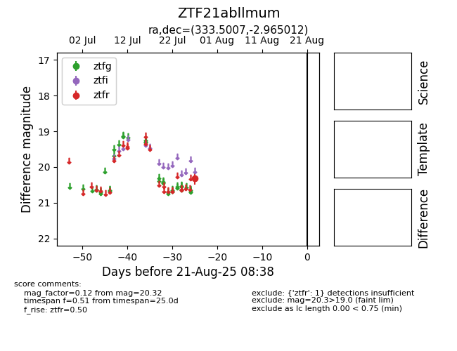

Target ZTF21abllmum at 2025-08-21 08:38, see:
FINK: fink-portal.org/ZTF21abllmum
Lasair: lasair-ztf.lsst.ac.uk/objects/ZTF21abllmum
ALeRCE: alerce.online/object/ZTF21abllmum
alt names
ZTF21abllmum (ztf,alerce)
coordinates:
equatorial (ra, dec) = (333.5007,-2.96501)
galactic (l, b) = (58.7241,-45.29965)
photometry
last ztfr=20.32
1 ztfr detections
